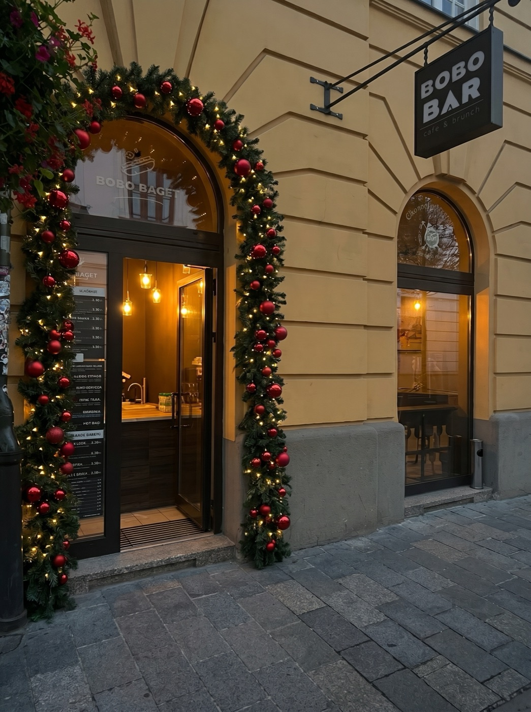
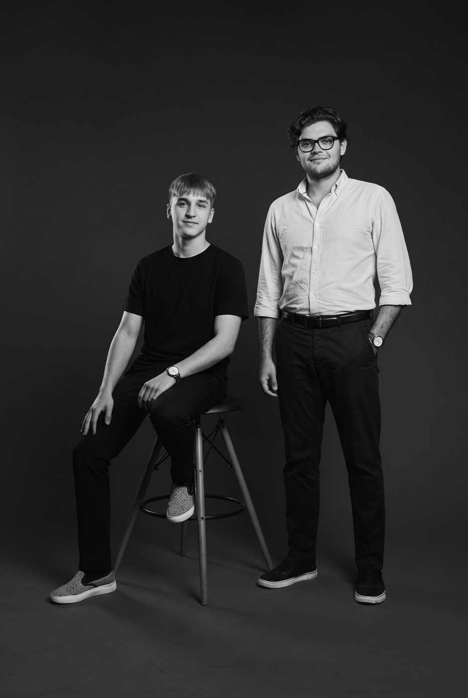
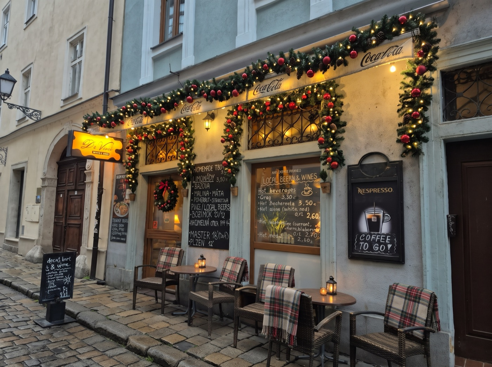
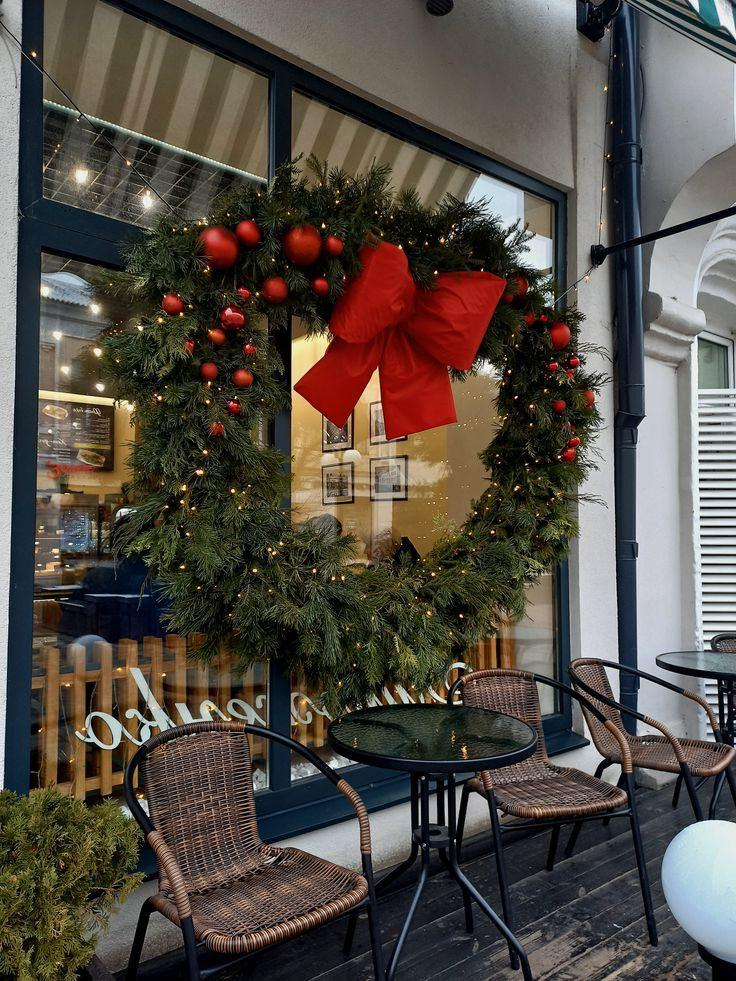
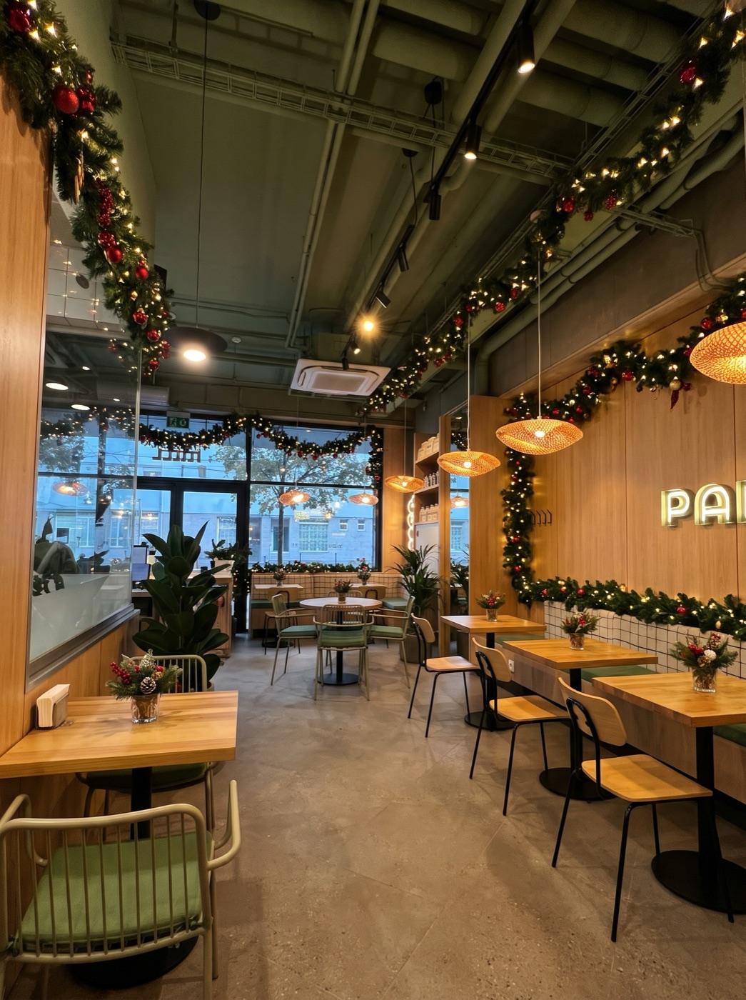
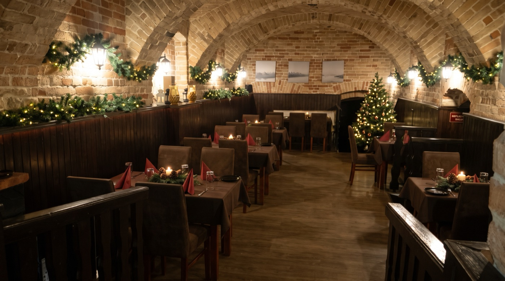
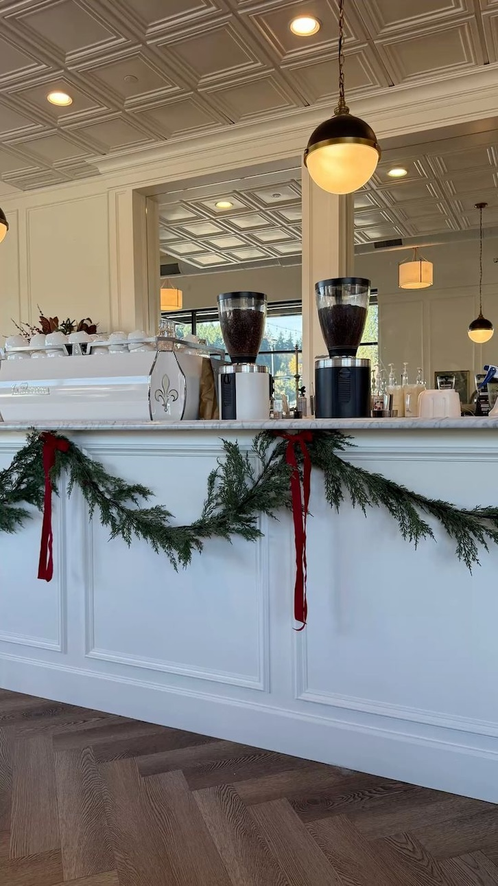
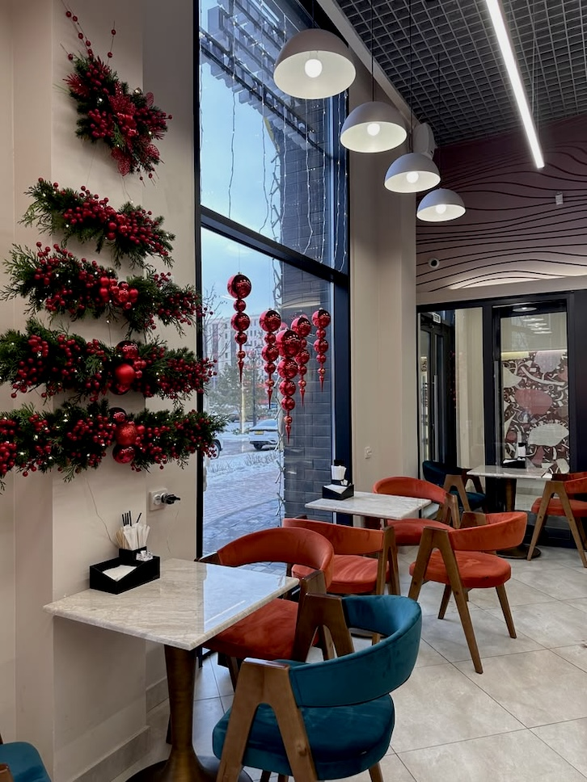
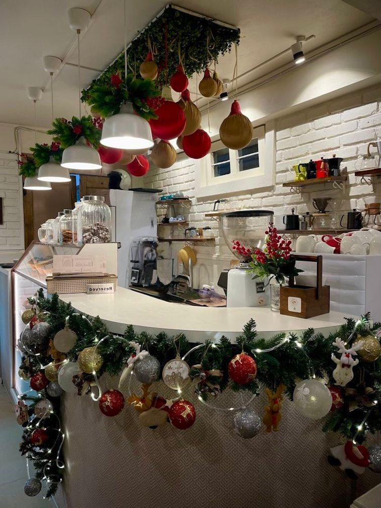
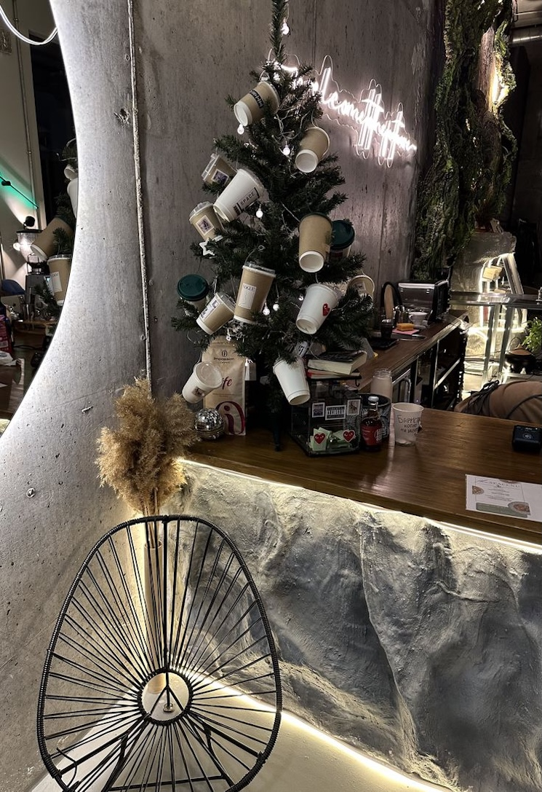

Eingang & Schaufenster
Festliches Entree mit Tannengirlande
Warme Lichterketten, dichte Tannengirlanden und elegante rote Akzente, die Vorbeigehende sofort magisch anziehen.
Stilvolle, handgemachte Weihnachtsdekoration für Cafés, Bars, Restaurants und Boutiquen in Wien. Als motivierte Uni-Wien-Studenten übernehmen wir für Sie den kompletten Aufbau – unkompliziert, zügig und zu fairen Konditionen.

„Wir lieben die Wiener Vorweihnachtszeit und möchten jedes Schaufenster zum Strahlen bringen!“
Wir sind beide 20 Jahre alt, studieren an der Universität Wien und teilen eine große Begeisterung für schöne Ästhetik und die festliche Atmosphäre unserer Stadt im Advent.
Als Gäste kennen und schätzen wir die Vielfalt der Wiener Kaffeehäuser, Weinbars, Restaurants und Boutiquen. Doch wir wissen auch: Für Betreiber und Gastronomen ist die Vorweihnachtszeit oft pure Hektik. Zwischen Wareneinkauf, Reservierungen und vollem Betrieb bleibt einfach keine Zeit mehr, sich um Lichterketten, Tannenzweige und stimmungsvolle Deko zu kümmern.
Genau hier packen wir für Sie an: Zu zweit kommen wir direkt zu Ihnen ins Lokal, bringen Material und kreative Ideen mit und schaffen innerhalb weniger Stunden ein warmes, festliches Ambiente, das Ihre Gäste begeistert und zum Verweilen einlädt.
Von stimmungsvollen Schaufenstern über festliche Theken bis hin zu gemütlichen Wohlfühlecken – hier sehen Sie Beispiele für Dekorationen, die wir zügig, geschmackvoll und ohne Chaos bei Ihnen umsetzen.

Warme Lichterketten, dichte Tannengirlanden und elegante rote Akzente, die Vorbeigehende sofort magisch anziehen.

Festliche Tischläufer, Kerzenarrangements und edle Akzente für Restaurants, Weinbars und Cafés.

Perfekt aufeinander abgestimmte Kugeln, Bänder und Lichtfarben – für ein harmonisches Gesamtbild im Raum.

Beleuchtete Sterne, hängende Ornamente und zarte Winterdetails, die auch aus der Ferne im Dunkeln glänzen.

Kombination aus warmem Kerzenlicht, Tannenduft und winterlichen Details für maximalen Komfort Ihrer Gäste.

Sinnvoll eingesetzte Dekoelemente auf begrenztem Raum, damit Ihre Produkte im Mittelpunkt bleiben.

Nutzt die Höhe des Raumes – ideal für Lokale, in denen die Boden- und Tischfläche komplett frei bleiben muss.

Echtes Tannengrün, Zapfen, dezenter Glanz und Holzelemente für ein uriges, authentisches Alpen- und Wiengefühl.

Stilvoll arrangierte Akzente, dezenter Lichterglanz und Tannenduft für eine gemütliche Wiener Kaffeehaus- und Baratmosphäre.
Wir bieten maßgeschneiderte Lösungen für Gastronomie, Cafés und Gewerbeflächen in ganz Wien.
Das Schaufenster ist die Visitenkarte Ihres Geschäfts. Wir schaffen magische Auslagen mit Beleuchtung, Kränzen und Schneeeffekten, die Fußgänger zum Innehalten bringen.
Vom Eingangsbereich bis zum Tresen: Wir bringen warmes Licht und Tannengrün in Ihren Gastraum, sodass sich Gäste sofort geborgen fühlen und länger bleiben.
Bäume in passender Größe, stilsicher geschmückt. Perfekt als festlicher Mittelpunkt und als Fotomotiv für Social-Media-Stories Ihrer Gäste.
Nach den Feiertagen müssen Sie sich um nichts kümmern: Auf Wunsch kommen wir Anfang Januar pünktlich wieder vorbei, bauen alles sauber ab und hinterlassen Ihr Lokal besenrein.
Ganz ohne bürokratischen Aufwand – direkt, flexibel und transparent.
Schicken Sie uns 1–2 Fotos von Ihrem Schaufenster oder Innenraum ganz unkompliziert direkt per WhatsApp.
Wir schlagen Ihnen passende Deko-Ideen vor und nennen Ihnen sofort eine faire, transparente Pauschale ohne versteckte Kosten.
Wir bringen alles mit und dekorieren Ihr Lokal in 2 bis 4 Stunden fertig – gerne vor dem Aufsperren oder am Ruhetag!
Maßgeschneidert auf kleine Betriebe – keine überteuerten Agentur-Honorare.
Wir arbeiten morgens vor dem ersten Gast oder an Ruhetagen – ganz nach Ihrem Betrieb.
Echtes Wiener Wohlfühl-Flair mit warmweißem Licht und harmonischen Naturfarben.
Die Vorweihnachtszeit beginnt bald. Schreiben Sie uns einfach kurz auf WhatsApp – wir antworten umgehend.
Jetzt per WhatsApp anfragen Unverbindlich & schnelle KosteneinschätzungWir sind Savelij und Sebastian, beide 20 Jahre alt und Studenten an der Uni Wien. Die Zusammenarbeit ist denkbar einfach: Sie schicken uns per WhatsApp ein paar Fotos Ihres Lokals, wir nennen Ihnen eine faire Pauschale und vereinbaren einen Termin, an dem wir alles zu zweit aufbauen.
Wir sind in ganz Wien mobil unterwegs – vom 1. Bezirk (Innere Stadt) über Neubau, Josefstadt, Leopoldstadt bis hin zu Döbling, Hietzing und den Außenbezirken. Anfahrten in Wien-Umgebung (z. B. Mödling, Klosterneuburg) nach kurzer Rücksprache.
Beides ist möglich! Wenn Sie bereits Kisten mit eigener Dekoration im Lager haben, zaubern wir daraus ein neues, stimmiges Konzept. Falls nicht, bringen wir Lichterketten, Tannengirlanden, Kugeln und Bänder komplett mit.
Da jedes Lokal unterschiedlich groß ist, kalkulieren wir fair nach tatsächlichem Aufwand. Kleinere Akzente oder ein Schaufenster starten oft schon ab 120–180 €. Nach einem kurzen Foto per WhatsApp nennen wir Ihnen sofort einen verbindlichen Pauschalpreis.
Sehr gerne! Wir möchten Ihren laufenden Gastronomie- oder Ladenbetrieb keinesfalls stören. Wir kommen morgens vor dem Aufsperren oder an Ihrem Ruhetag.
Ja, auf Wunsch vereinbaren wir direkt einen Termin für Anfang Januar. Wir bauen alles ordentlich ab, verpacken es platzsparend oder entsorgen Naturmaterialien sauber.
Kein Ausfüllen langer Formulare, kein bürokratischer Aufwand: Schreiben Sie uns einfach direkt eine kurze Nachricht auf WhatsApp.
1–2 Fotos vom Schaufenster oder Gastraum per WhatsApp senden.
Wir melden uns umgehend mit Ideen & einer fairen Pauschale.
Wir rücken an und zaubern weihnachtlichen Glanz in Ihr Lokal!